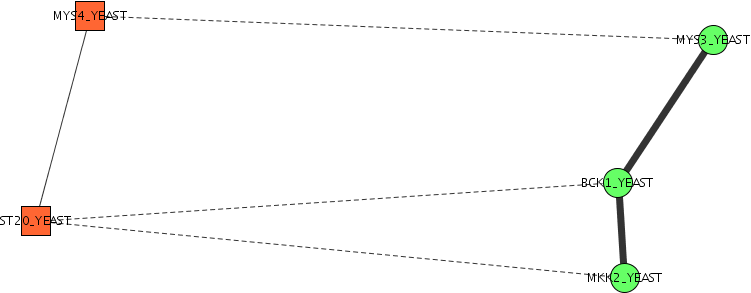

Figure 1: network ST20_YEAST|CG28_YEAST --> ST20_YEAST|KN8R_YEAST --> ST20_YEAST|K182_YEAST
In many cases a single protein in the query network will be homologous with multiple proteins in the target network (or vice versa). This leads to a situation where a single protein can appear more than once in the resulting network. Figure 1 shows a result path that only includes one protein from the query network. Figure 2 shows and example where only two proteins from the query network are included. We call these duplicate protein networks.
Figure 1: network ST20_YEAST|CG28_YEAST --> ST20_YEAST|KN8R_YEAST --> ST20_YEAST|K182_YEAST

Figure 2: network MYS4_YEAST|MYS3_YEAST --> ST20_YEAST|BCK1_YEAST --> ST20_YEAST|MKK2_YEAST
While these are valid networks according to the underlying network alignment algorithms, these results are generally not what is desired. Therefore inclusion of Duplicate Protein Networks is not allowed by default. However in some cases the resulting networks can be instructive so we provide an option for including Duplicate Protein Networks in the results.